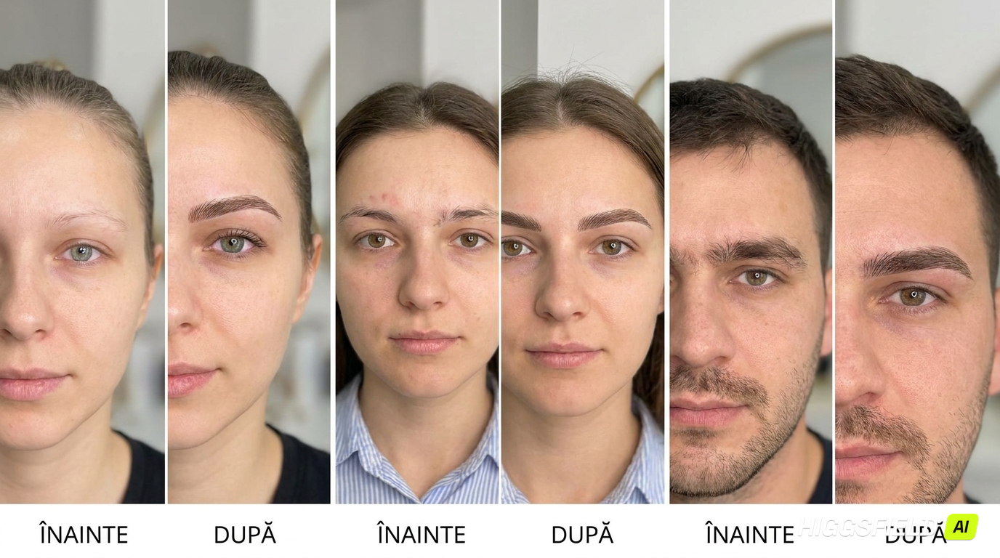
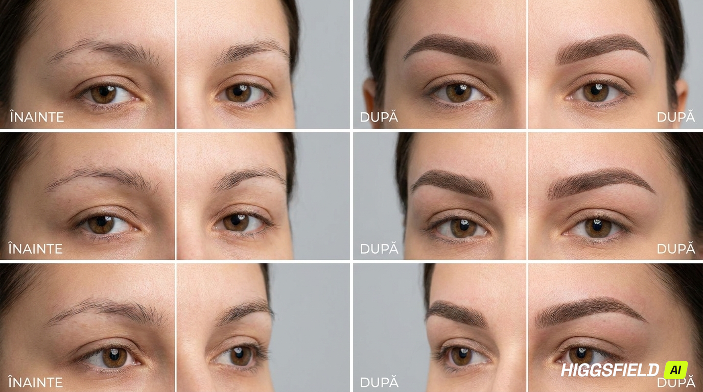
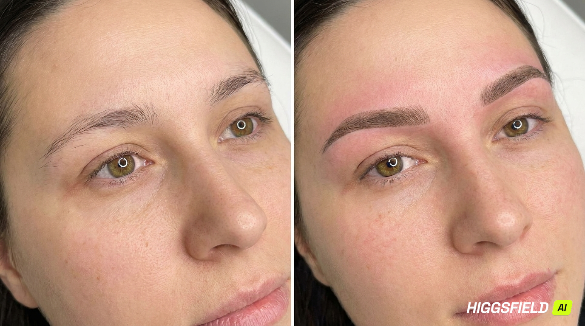
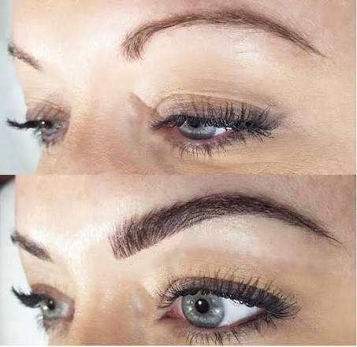

Fiecare chip are nevoie de o abordare diferită. Alegem împreună tehnica potrivită formei, densității firelor tale naturale și rezultatului pe care ți-l dorești.

IlustrațieTehnica fir cu fir presupune reconstrucția sprâncenei prin trasarea unor fire individuale, de aceeași lungime, grosime și direcție cu firele din perii naturali, astfel încât să completeze cât mai fidel sprânceana existentă.
Este alegerea potrivită pentru persoanele care își doresc un aspect foarte natural — sprâncene rare, cu goluri vizibile în urma unui pensat excesiv, probleme de simetrie, cicatrici sau alopecie.

IlustrațieTehnica powder imită efectul unei sprâncene machiate, definind forma printr-un joc de lumini și umbre. Capul sprâncenei rămâne aerat, iar spre coadă densitatea pigmentului crește treptat, creând un efect degradé natural.
Este recomandată persoanelor care au deja fire naturale, dar se confruntă cu goluri, lipsă de densitate sau contur difuz, precum și pentru corectarea unor micropigmentări mai vechi.

IlustrațieTehnica hybrid combină fir cu fir și powder într-un singur rezultat: fire trasate individual pe zona frontală, completate cu umbrire fină spre coadă, pentru un efect tridimensional și mai pregnant.
Este soluția potrivită pentru sprâncene foarte rare, cu goluri mari, sau în lipsa aproape totală a firelor naturale (de exemplu în cazuri de alopecie), precum și pentru neutralizarea unor tatuaje vechi cu nuanțe nedorite.

Microblading-ul este o metodă manuală de reconstrucție a sprâncenei: firele fine, identice ca lungime, grosime și direcție cu cele naturale, sunt trasate cu un instrument tip creion, prevăzut cu ace foarte subțiri de unică folosință.
Spre deosebire de tehnica fir cu fir realizată cu aparatul electric (mișcare prin vibrație), la microblading firele se creează manual, printr-o mișcare de tăiere fină, ceea ce oferă un rezultat extrem de precis.
Indiferent de tehnica aleasă, urmăm același protocol riguros, centrat pe siguranța și confortul tău.
Discutăm despre procedură, așteptări, îngrijire și stabilim forma potrivită chipului tău.
Măsurăm și desenăm forma sprâncenei, apoi aplicăm crema anestezică (~20 minute).
Odată aprobat designul în oglindă, realizăm micropigmentarea în condiții sterile. Durată: 60–90 minute.
La aproximativ 1 lună, evaluăm vindecarea și corectăm, dacă este cazul, forma sau intensitatea culorii.
Procedura nu este recomandată persoanelor care suferă de:
Programează o consultație gratuită și stabilim împreună soluția ideală pentru sprâncenele tale.